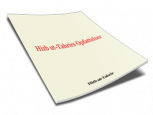
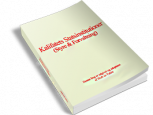
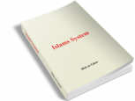
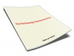

Bøger
Hizb ut-Tahrirs opfattelser

Siden midten af det 12. århundrede e.H. (det 18. århundrede e.Kr.)
begyndte den islamiske verden at styrte hastigt ned fra dens værdige
status og på frygtelig vis at styrtdykke mod forfaldets afgrund.
Kalifatets Statsinstitutioner

Vi har i denne bog ønsket at formidle styrets og forvaltningens
institutioner i Kalifatet på en tydelig, letforståelig og praktisk
måde, men først og fremmest gennem en betryggende og tilfredsstillende
korrekt udledning og bevisførelse.
Islams system

Mennesket rejser sig ved den tanke det har om livet, universet og
mennesket, samt disses forhold til det, der er før og efter det
jordiske liv. Derfor må det nuværende menneskes tanke nødvendigvis
ændres gennem en fundamental og omfattende ændring, og der må
frembringes en ny tanke for at det rejser sig.
Den partimæssige sammenslutning

Siden det trettende århundrede e.H (det nittende e.Kr.) blev der
oprettet adskillige bevægelser for oprejsning (nahdah). De udgjorde
forsøg, som ikke lykkedes, trods de efterlod en effektiv virkning på
dem, der kom efter disse, så de gentager forsøgene endnu en ga...
Bestanddele af den Islamiske Psyke

Personlighed i ethvert menneske består af dets mentalitet og psyke.
Menneskets udseende, krop, påklædning m.m. har intet at gøre hermed,
da alle disse blot er facader, og det ville være overfladisk af nogen
at tro, at disse er dele af personligheden, eller at disse indvirker
på personligheden.